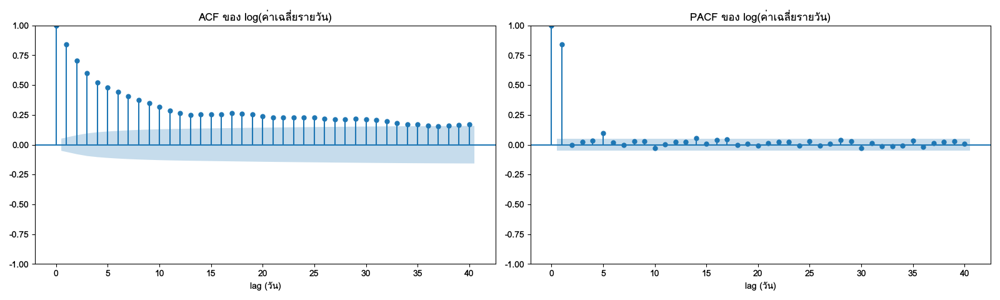
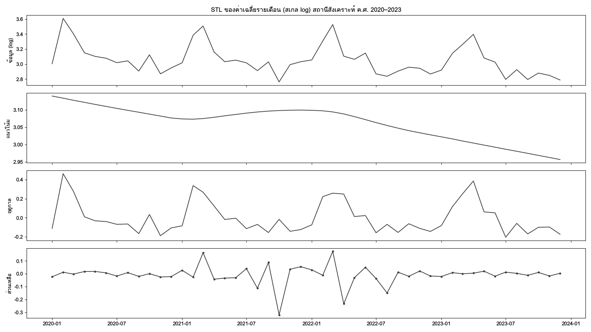
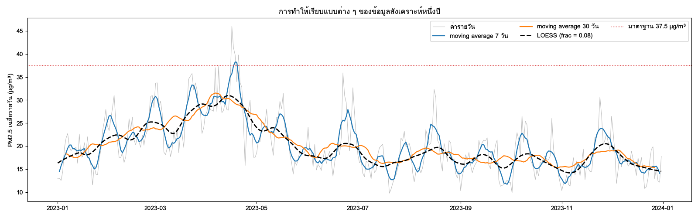

14 การวิเคราะห์อนุกรมเวลาเชิงสำรวจ
ข้อมูล PM2.5 เป็นอนุกรมเวลาโดยธรรมชาติ ค่าของแต่ละชั่วโมงเรียงตามเวลา และค่าที่อยู่ติดกันสัมพันธ์กัน บทที่ 13 เตือนว่าความสัมพันธ์นี้ทำลายสมมติฐานความเป็นอิสระของสถิติดั้งเดิม บทนี้มองความสัมพันธ์เดียวกันจากอีกด้าน คือเป็น ข้อมูล ที่บอกเราเกี่ยวกับกลไกของปรากฏการณ์ ฤดูฝุ่นที่วนกลับมาทุกปี แนวโน้มระยะยาวที่อาจดีขึ้นหรือแย่ลง เหตุการณ์ไฟป่าที่ทำให้ค่าพุ่งขึ้นเป็นช่วง และการเปลี่ยนเครื่องวัดที่ทำให้ระดับค่าขยับ ล้วนเป็นรูปแบบตามเวลาที่ต้องใช้เครื่องมือเฉพาะ
บทนี้เป็นการวิเคราะห์อนุกรมเวลา เชิงสำรวจ คือการแยกองค์ประกอบ อธิบายโครงสร้าง และตรวจหาสิ่งผิดปกติ ไม่ใช่การพยากรณ์ ซึ่งต้องใช้แบบจำลองอย่าง ARIMA หรือ machine learning และอยู่นอกขอบเขตของรายวิชา (Hyndman และ Athanasopoulos 2021) อย่างไรก็ตาม การสำรวจที่ดีเป็นขั้นแรกที่ขาดไม่ได้ของการพยากรณ์ทุกแบบ ตัวอย่างในบทนี้ใช้ค่าเฉลี่ยรายวันจาก daily_pm25_clean ของสถานี 35t (ศาลากลางจังหวัดเชียงใหม่) ในช่วงสำรวจ
วัตถุประสงค์การเรียนรู้
เมื่อจบบทนี้ ผู้อ่านสามารถ
- อธิบายองค์ประกอบ trend, seasonality และ residual และเลือกแบบจำลองแบบบวกหรือแบบคูณ
- อธิบายแนวคิด stationarity และเหตุผลที่สำคัญต่อการวิเคราะห์อนุกรมเวลา
- อ่านและตีความกราฟ ACF ของข้อมูล PM2.5
- แยกองค์ประกอบของอนุกรมเวลาด้วย STL และประเมินความแรงของฤดูกาลและแนวโน้ม
- เปรียบเทียบวิธีทำให้เรียบ และเลือกขนาดหน้าต่างให้เหมาะกับคำถาม
- จัดแนวข้อมูลเซนเซอร์ที่เวลาไม่สม่ำเสมอให้เป็นรายชั่วโมงอย่างถูกต้อง
14.1 องค์ประกอบของอนุกรมเวลา: trend, seasonality, residual
สามองค์ประกอบ
แนวคิดพื้นฐานของการสำรวจอนุกรมเวลาคือ มองค่าที่สังเกตได้ว่าประกอบจากส่วนที่มีโครงสร้างต่างกัน (Hyndman และ Athanasopoulos 2021)
- แนวโน้ม (trend, \(T_t\)) การเปลี่ยนแปลงระยะยาวของระดับค่า เช่น ค่าเฉลี่ยรายปีค่อย ๆ ลดลงจากมาตรการควบคุมการเผา
- ฤดูกาล (seasonality, \(S_t\)) รูปแบบที่ซ้ำในคาบที่แน่นอน ข้อมูล PM2.5 มีฤดูกาลหลายระดับ ได้แก่ รายปี (ฤดูฝุ่นช่วงต้นปี) รายสัปดาห์ (การจราจรวันทำงาน) และรายวัน (ชั้นผสมอากาศที่ต่ำในช่วงกลางคืนและเช้า)
- ส่วนเหลือ (residual หรือ remainder, \(R_t\)) สิ่งที่เหลือเมื่อเอาแนวโน้มและฤดูกาลออก ประกอบด้วยความผันผวนจากสภาพอากาศรายวัน เหตุการณ์เฉพาะ และความคลาดเคลื่อนของการวัด
| ระดับเวลา | ฤดูกาลที่คาดว่ามี | กลไกทางกายภาพ |
|---|---|---|
| รายชั่วโมง (ภายในวัน) | สูงช่วงกลางคืนถึงเช้า ต่ำช่วงบ่าย | ชั้นผสมอากาศ (mixing layer) ต่ำตอนกลางคืน การจราจรช่วงเช้า |
| รายวัน (ภายในสัปดาห์) | วันทำงานอาจสูงกว่าวันหยุดเล็กน้อยในเมืองใหญ่ | การจราจรและกิจกรรมทางเศรษฐกิจ |
| รายเดือน (ภายในปี) | สูงมากในฤดูแล้ง (ภาคเหนือประมาณกุมภาพันธ์ถึงเมษายน) | การเผาในที่โล่ง ความกดอากาศสูง ลมสงบ ไม่มีฝน |
แบบจำลองแบบบวกและแบบคูณ
องค์ประกอบทั้งสามรวมกันได้สองแบบ
\[ y_t = T_t + S_t + R_t \quad \text{(แบบบวก)} \qquad\qquad y_t = T_t \times S_t \times R_t \quad \text{(แบบคูณ)} \tag{14.1}\]
โดยที่ \(y_t\) คือค่าที่สังเกตได้ ณ เวลา \(t\) ในแบบบวก ฤดูกาลเพิ่มหรือลดค่าเป็นจำนวนคงที่ เช่น เดือนมีนาคมสูงกว่าค่าปกติ 20 µg/m³ ทุกปี ในแบบคูณ ฤดูกาลเพิ่มหรือลดเป็นสัดส่วน เช่น เดือนมีนาคมสูงกว่าค่าปกติ 75% ทุกปี
ข้อมูล PM2.5 มักเหมาะกับแบบคูณมากกว่า เพราะขนาดของยอดฤดูฝุ่นมักใหญ่ขึ้นตามระดับพื้นฐาน และการแจกแจงเบ้ขวา (หัวข้อ 13.1) วิธีที่สะดวกคือแปลงข้อมูลด้วย log ก่อน แล้วใช้แบบบวก เพราะ \(\log(T \times S \times R) = \log T + \log S + \log R\) เมื่อแปลงฤดูกาลกลับด้วยฟังก์ชันเอกซ์โพเนนเชียล จะได้ ตัวคูณฤดูกาล (seasonal factor) ที่ตีความง่าย เช่น 1.75 คือสูงกว่าระดับแนวโน้ม 75%
เตรียมข้อมูลให้เป็นอนุกรมเวลาที่มีความถี่แน่นอน
เครื่องมืออนุกรมเวลาส่วนใหญ่ต้องการข้อมูลที่ มีความถี่แน่นอน คือหนึ่งค่าต่อช่วงเวลาไม่ขาดไม่เกิน วันที่ไม่มีข้อมูลต้องปรากฏเป็นค่าว่าง ไม่ใช่หายไปจากตาราง (implicit missing ในบทที่ 10)
import duckdb
import numpy as np
import pandas as pd
con = duckdb.connect("data/pm25.duckdb", read_only=True)
s = con.execute("""
SELECT date, pm25_mean FROM daily_pm25_clean
WHERE station_id = '35t' AND is_complete AND date < DATE '2024-01-01'
ORDER BY date
""").df()
s = s.set_index(pd.to_datetime(s["date"]))["pm25_mean"].asfreq("D") # วันที่ขาดกลายเป็น NaN
print(len(s), s.isna().sum())# ผลลัพธ์ (ตัวอย่าง)
# ข้อมูลสังเคราะห์ ไม่ใช่ข้อมูล Air4Thai จริง
1461 15asfreq("D") สร้างดัชนีวันที่ครบทุกวัน ได้ 1,461 วัน (สี่ปีรวมปีอธิกสุรทิน ค.ศ. 2020) โดย 15 วันที่ข้อมูลไม่ครบ 18 ชั่วโมงหรือไม่มีแถวเลยกลายเป็นค่าว่าง วิธีทางอนุกรมเวลาหลายวิธี เช่น STL ไม่รับค่าว่าง ต้องเติมช่องว่างสั้น ๆ ก่อน การเติมด้วย interpolation สำหรับช่องว่างไม่เกินสามวันเป็นทางเลือกที่สมเหตุสมผลสำหรับการสำรวจ (บทที่ 10) ส่วนช่องว่างที่ยาวกว่านั้นต้องพิจารณาเป็นกรณี
filled = s.interpolate(limit=3) # ช่องว่างไม่เกิน 3 วัน
filled = filled.fillna(filled.rolling(15, center=True, min_periods=1).median()) # ช่องที่เหลือ
daily_log = np.log(filled)14.2 stationarity และ ★ การทดสอบ (ADF, KPSS)
stationarity คืออะไร
อนุกรมเวลาที่มี stationarity (แบบอ่อน) คืออนุกรมที่ค่าเฉลี่ย ความแปรปรวน และโครงสร้างความสัมพันธ์ระหว่างค่าที่ห่างกันเท่ากัน ไม่เปลี่ยนตามเวลา กล่าวอย่างง่าย คือ ถ้าตัดอนุกรมเป็นช่วง ๆ แต่ละช่วงจะมีลักษณะทางสถิติเหมือนกัน ไม่ว่าจะตัดที่ใด
ข้อมูล PM2.5 ดิบไม่มี stationarity อย่างชัดเจน ค่าเฉลี่ยในเดือนมีนาคมสูงกว่าเดือนกรกฎาคมมาก และความแปรปรวนในฤดูฝุ่นก็สูงกว่า ข้อมูลที่มีแนวโน้มระยะยาวก็ไม่มี stationarity เช่นกัน เพราะค่าเฉลี่ยเลื่อนไปตามเวลา
ทำไมสำคัญ
stationarity สำคัญด้วยเหตุผลสองข้อ ข้อแรก สถิติสรุปอย่างค่าเฉลี่ยหรือสหสัมพันธ์ของอนุกรมที่ไม่มี stationarity อาจไม่มีความหมาย ค่าเฉลี่ยทั้งปีของ PM2.5 ผสมฤดูฝุ่นกับฤดูฝนเข้าด้วยกัน ไม่ได้แทนช่วงใดเลย ข้อสอง อนุกรมสองชุดที่ต่างมีแนวโน้มจะมีสหสัมพันธ์สูงแม้ไม่มีความเกี่ยวข้องกันเลย เรียกว่า spurious correlation (Granger และ Newbold 1974) เช่น ค่า PM2.5 ที่ลดลงต่อเนื่องหลายปีอาจมีสหสัมพันธ์สูงกับจำนวนผู้ใช้สมาร์ตโฟนที่เพิ่มขึ้น ซึ่งไม่มีความหมาย
วิธีทำให้อนุกรมใกล้ stationarity มากขึ้นได้แก่ การแปลง log เพื่อทำให้ความแปรปรวนคงที่ การเอาฤดูกาลออก (หัวข้อ 14.4) และการหาผลต่าง (differencing) เช่น \(y_t - y_{t-1}\) เพื่อเอาแนวโน้มออก หรือ \(y_t - y_{t-365}\) เพื่อเอาฤดูกาลรายปีออก
การทดสอบ ADF และ KPSS ★
หัวข้อย่อยนี้ไม่ได้สอนในชั้นเรียน อ่านข้ามได้โดยไม่กระทบความเข้าใจบทถัดไป
การทดสอบ stationarity ที่ใช้บ่อยมีสองแบบที่ตั้งสมมติฐานว่างกลับกัน
| การทดสอบ | สมมติฐานว่าง (\(H_0\)) | p-value ต่ำแปลว่า |
|---|---|---|
| Augmented Dickey-Fuller (ADF) | มี unit root (ไม่ stationary) | มีหลักฐานว่า stationary |
| KPSS | stationary | มีหลักฐานว่าไม่ stationary |
เพราะสมมติฐานว่างกลับกัน การใช้ทั้งสองการทดสอบร่วมกันให้ข้อมูลมากกว่าการใช้แบบเดียว (Kwiatkowski และคณะ 1992)
import warnings
from statsmodels.tsa.stattools import adfuller, kpss
monthly_log = np.log(s.resample("MS").mean())
for name, x in [("รายเดือน", monthly_log), ("รายวัน", daily_log)]:
adf_stat, adf_p = adfuller(x, autolag="AIC")[:2]
with warnings.catch_warnings(): # KPSS เตือนเมื่อ p-value อยู่นอกตาราง
warnings.simplefilter("ignore")
kpss_stat, kpss_p = kpss(x, regression="c", nlags="auto")[:2]
print(f"{name}: ADF p = {adf_p:.3f}, KPSS p = {kpss_p:.3f}")# ผลลัพธ์ (ตัวอย่าง)
# ข้อมูลสังเคราะห์ ไม่ใช่ข้อมูล Air4Thai จริง
รายเดือน: ADF p = 0.271, KPSS p = 0.100
รายวัน: ADF p = 0.009, KPSS p = 0.100การตีความผลรายเดือน ADF ไม่ปฏิเสธ unit root และ KPSS ไม่ปฏิเสธ stationarity ผลขัดกันแบบนี้มักแปลว่า ข้อมูลไม่พอให้สรุป อนุกรมรายเดือนสี่ปีมีเพียง 48 ค่า และมีฤดูกาลแรง การทดสอบทั้งสองมีกำลังต่ำ ส่วนผลรายวัน ADF ปฏิเสธ unit root ขณะที่ KPSS ไม่ปฏิเสธ stationarity ทั้งสองชี้ไปทางเดียวกันว่าอนุกรมกลับเข้าหาระดับเฉลี่ย ไม่ได้ล่องลอยไปเรื่อย ๆ ค่า KPSS p = 0.100 เป็นขอบบนของตาราง ค่าจริงอาจสูงกว่า ซึ่ง statsmodels จะเตือนไว้
ข้อควรระวังสามข้อ ข้อแรก การทดสอบเหล่านี้ไวต่อฤดูกาลและการเลือกจำนวน lag ข้อสอง การไม่ปฏิเสธ \(H_0\) ไม่ใช่หลักฐานว่า \(H_0\) เป็นจริง (หัวข้อ 13.5) ข้อสาม สำหรับการสำรวจ การดูกราฟอนุกรมและ ACF มักให้ข้อมูลมากกว่า p-value ของการทดสอบเหล่านี้
14.3 autocorrelation: ACF และ ★ PACF
autocorrelation
autocorrelation (สหสัมพันธ์ในตัว) คือสหสัมพันธ์ระหว่างอนุกรมกับตัวเองที่เลื่อนไป \(k\) ช่วงเวลา เรียก \(k\) ว่า lag
\[ r_k = \frac{\sum_{t=k+1}^{n} (y_t - \bar{y})(y_{t-k} - \bar{y})}{\sum_{t=1}^{n} (y_t - \bar{y})^2} \tag{14.2}\]
โดยที่ \(y_t\) คือค่า ณ เวลา \(t\) \(\bar{y}\) คือค่าเฉลี่ยของอนุกรม \(n\) คือความยาวของอนุกรม และ \(r_k\) คือ autocorrelation ที่ lag \(k\) มีค่าตั้งแต่ −1 ถึง 1 กราฟของ \(r_k\) เทียบกับ \(k\) เรียกว่า ACF (autocorrelation function) หรือ correlogram
from statsmodels.tsa.stattools import acf, pacf
print("ACF ", np.round(acf(daily_log, nlags=7)[[1, 2, 3, 7]], 2))
print("PACF", np.round(pacf(daily_log, nlags=3)[1:4], 2))# ผลลัพธ์ (ตัวอย่าง)
# ข้อมูลสังเคราะห์ ไม่ใช่ข้อมูล Air4Thai จริง
ACF [0.7 0.62 0.6 0.58]
PACF [0.7 0.26 0.21]autocorrelation ที่ lag 1 เท่ากับ 0.70 แปลว่า ค่าของวันนี้กับเมื่อวานสัมพันธ์กันสูง ซึ่งสอดคล้องกับกลไกทางกายภาพ มวลอากาศและสภาพอุตุนิยมวิทยาเปลี่ยนช้า ฝุ่นที่สะสมวันนี้ยังอยู่ในวันพรุ่งนี้ ค่าที่ lag 7 ยังสูงถึง 0.58 ส่วนหนึ่งเป็นเพราะฤดูกาลรายปี วันในฤดูฝุ่นอยู่ใกล้กับวันในฤดูฝุ่นด้วยกัน

อ่าน ACF
| ลักษณะของ ACF | สิ่งที่บ่งชี้ |
|---|---|
| ลดลงช้ามาก ยังสูงที่ lag ไกล | มีแนวโน้มหรือฤดูกาลที่คาบยาวกว่าช่วง lag ที่ดู |
| ลดลงแบบเอกซ์โพเนนเชียล | ความจำระยะสั้นแบบ AR (ค่าวันนี้ขึ้นกับเมื่อวาน) |
| มียอดซ้ำที่ lag 7, 14, 21 | ฤดูกาลรายสัปดาห์ |
| มียอดที่ lag 24, 48 (ข้อมูลรายชั่วโมง) | ฤดูกาลรายวัน |
| ทุก lag อยู่ในแถบความเชื่อมั่น | ไม่พบ autocorrelation (white noise) |
ภาพที่ 14.1 แสดง ACF ที่ลดลงช้า ซึ่งบ่งชี้ทั้งความจำระยะสั้นและฤดูกาลรายปีที่ยังไม่ได้เอาออก การดู ACF ของ ส่วนเหลือ หลังแยกองค์ประกอบ (หัวข้อ 14.4) จะบอกได้ชัดกว่าว่าความสัมพันธ์ระยะสั้นเหลืออยู่เท่าใด
ผลต่อการวิเคราะห์
autocorrelation มีผลโดยตรงต่อการอนุมานในบทที่ 13 ถ้ามีข้อมูลรายวัน 1,461 ค่าที่มี autocorrelation lag 1 ประมาณ 0.7 ขนาดตัวอย่างที่มีประสิทธิผล (effective sample size) ต่ำกว่า 1,461 มาก ค่าประมาณคร่าว ๆ สำหรับกระบวนการ AR(1) คือ \(n_{\text{eff}} \approx n(1 - \rho)/(1 + \rho)\) ซึ่งในที่นี้ได้ประมาณ \(1461 \times 0.3/1.7 \approx 258\) เท่านั้น ช่วงความเชื่อมั่นที่คำนวณจาก \(n = 1{,}461\) จึงแคบเกินจริงมากกว่าสองเท่า
PACF ★
หัวข้อย่อยนี้ไม่ได้สอนในชั้นเรียน อ่านข้ามได้โดยไม่กระทบความเข้าใจบทถัดไป
autocorrelation ที่ lag 2 ส่วนหนึ่งเกิดจาก lag 1 ต่อกันสองทอด ถ้าวันนี้สัมพันธ์กับเมื่อวาน และเมื่อวานสัมพันธ์กับเมื่อวานซืน วันนี้ก็จะสัมพันธ์กับเมื่อวานซืนโดยอ้อม PACF (partial autocorrelation function) วัดความสัมพันธ์ที่ lag \(k\) หลังจากควบคุมผลของ lag ที่สั้นกว่าแล้ว ใน ภาพที่ 14.1 PACF มีค่าสูงเฉพาะที่ lag 1 แล้วตกลงใกล้ศูนย์ ซึ่งเป็นลักษณะของกระบวนการ AR(1) ข้อมูลสังเคราะห์ในรูปสร้างด้วยกระบวนการนี้จริง ส่วนข้อมูลของสถานี 35t ในผลลัพธ์ข้างต้นมี PACF ที่ lag 2 และ 3 ยังไม่เป็นศูนย์ (0.26 และ 0.21) แปลว่าความจำของอนุกรมยาวกว่าหนึ่งวัน รูปแบบของ ACF และ PACF เป็นเครื่องมือดั้งเดิมในการเลือกอันดับของแบบจำลอง ARIMA (Box และคณะ 2015) ซึ่งอยู่นอกขอบเขตของบทนี้
14.4 การแยกองค์ประกอบ: classical decomposition และ STL
classical decomposition
classical decomposition เป็นวิธีแยกองค์ประกอบแบบดั้งเดิม ขั้นตอนคือ (1) ประมาณแนวโน้มด้วย moving average ที่มีความกว้างเท่าคาบฤดูกาล (2) เอาแนวโน้มออก แล้วเฉลี่ยค่าของแต่ละตำแหน่งในฤดูกาล เช่น ค่าเฉลี่ยของทุกเดือนมีนาคม ได้เป็นฤดูกาล (3) ส่วนที่เหลือคือ residual
from statsmodels.tsa.seasonal import seasonal_decompose
monthly = s.resample("MS").mean()
classical = seasonal_decompose(monthly, model="additive", period=12)
print(classical.seasonal.iloc[:12].round(1).tolist())# ผลลัพธ์ (ตัวอย่าง)
# ข้อมูลสังเคราะห์ ไม่ใช่ข้อมูล Air4Thai จริง
[-2.7, 10.8, 26.3, 12.9, -5.7, -5.8, -7.1, -5.3, -5.3, -6.0, -6.9, -5.0]ฤดูกาลที่ได้บอกว่า เดือนมีนาคมสูงกว่าแนวโน้มประมาณ 26 µg/m³ และเดือนกุมภาพันธ์กับเมษายนสูงกว่าประมาณ 11 และ 13 µg/m³ ข้อจำกัดของวิธีนี้คือ ฤดูกาลเหมือนกันทุกปี ซึ่งไม่ตรงกับความจริงที่ความรุนแรงของฤดูฝุ่นต่างกันแต่ละปี แนวโน้มหายไปหกเดือนที่ต้นและท้ายอนุกรมเพราะ moving average ต้องการข้อมูลทั้งสองด้าน และค่าผิดปกติเพียงค่าเดียวดึงฤดูกาลของเดือนนั้นทุกปี
STL
STL (Seasonal and Trend decomposition using Loess) ที่ Cleveland และคณะเสนอในปี ค.ศ. 1990 แก้ข้อจำกัดเหล่านี้ (Cleveland และคณะ 1990) STL ใช้ LOESS (หัวข้อ 14.5) ประมาณแนวโน้มและฤดูกาลสลับกันซ้ำหลายรอบ ข้อดีคือ ฤดูกาลเปลี่ยนไปตามเวลาได้ ประมาณแนวโน้มได้จนสุดอนุกรม และมีตัวเลือก robust=True ที่ลดน้ำหนักของค่าผิดปกติ ไม่ให้ดึงองค์ประกอบอื่น
from statsmodels.tsa.seasonal import STL
res = STL(np.log(monthly), period=12, robust=True).fit()
print("ตัวคูณฤดูกาล", np.exp(res.seasonal.iloc[:12]).round(2).tolist())
print("แนวโน้ม (µg/m³)", np.exp(res.trend.iloc[[0, 23, 47]]).round(1).tolist())# ผลลัพธ์ (ตัวอย่าง)
# ข้อมูลสังเคราะห์ ไม่ใช่ข้อมูล Air4Thai จริง
ตัวคูณฤดูกาล [0.83, 1.51, 1.75, 1.52, 0.96, 0.82, 0.75, 0.9, 0.94, 0.85, 0.75, 0.9]
แนวโน้ม (µg/m³) [26.6, 25.9, 26.4]เพราะแยกองค์ประกอบในสเกล log ตัวคูณฤดูกาลจึงตีความเป็นสัดส่วน เดือนมีนาคมของปีแรกสูงกว่าระดับแนวโน้ม 75% ขณะที่กรกฎาคมต่ำกว่า 25% ส่วนแนวโน้มแทบคงที่ที่ประมาณ 26 µg/m³ ตลอดสี่ปี

ภาพที่ 14.2 แสดงจุดที่ควรสังเกตสองข้อ ข้อแรก ยอดของฤดูกาลสูงไม่เท่ากันในแต่ละปี STL ยอมให้ฤดูกาลเปลี่ยนได้ ความเร็วของการเปลี่ยนกำหนดด้วยพารามิเตอร์ seasonal (ความกว้างของ LOESS สำหรับฤดูกาล ต้องเป็นเลขคี่) ค่าที่ใหญ่ทำให้ฤดูกาลคงที่มากขึ้น เมื่อข้อมูลมีเพียงไม่กี่รอบฤดูกาล การให้ฤดูกาลเปลี่ยนเร็วเกินไปทำให้ฤดูกาลดูดซับความผันผวนของแต่ละปีไปหมด ข้อสอง ส่วนเหลือที่ห่างจากศูนย์มากในบางเดือนคือเดือนที่ผิดปกติเมื่อเทียบกับรูปแบบปกติ ซึ่งเป็นจุดเริ่มต้นของการตรวจหาความผิดปกติในหัวข้อ 14.7
ความแรงของแนวโน้มและฤดูกาล
ตัววัดความแรงขององค์ประกอบที่ใช้กับผลของ STL ได้ ตามแนวทางของ Hyndman และ Athanasopoulos ซึ่งพัฒนาจากงานของ Wang และคณะ (Hyndman และ Athanasopoulos 2021; Wang และคณะ 2006) เทียบความแปรปรวนของส่วนเหลือกับความแปรปรวนขององค์ประกอบบวกส่วนเหลือ
\[ F_S = \max\left(0,\ 1 - \frac{\operatorname{Var}(R_t)}{\operatorname{Var}(S_t + R_t)}\right), \qquad F_T = \max\left(0,\ 1 - \frac{\operatorname{Var}(R_t)}{\operatorname{Var}(T_t + R_t)}\right) \tag{14.3}\]
โดยที่ \(F_S\) คือความแรงของฤดูกาล และ \(F_T\) คือความแรงของแนวโน้ม มีค่าระหว่าง 0 ถึง 1 ค่าใกล้ 1 แปลว่าองค์ประกอบนั้นอธิบายความผันผวนได้มากเมื่อเทียบกับส่วนเหลือ
f_s = max(0, 1 - res.resid.var() / (res.seasonal + res.resid).var())
f_t = max(0, 1 - res.resid.var() / (res.trend + res.resid).var())
print(round(f_s, 2), round(f_t, 2))# ผลลัพธ์ (ตัวอย่าง)
# ข้อมูลสังเคราะห์ ไม่ใช่ข้อมูล Air4Thai จริง
0.97 0.05สถานีนี้มีฤดูกาลแรงมาก (\(F_S = 0.97\)) แต่แทบไม่มีแนวโน้ม (\(F_T = 0.05\)) การคำนวณตัววัดนี้ของทุกสถานีแล้วเปรียบเทียบเป็นวิธีที่ดีในการจัดกลุ่มสถานีตามลักษณะอนุกรมเวลา ซึ่งเชื่อมกับการสำรวจหลายมิติในบทที่ 15
STL กับข้อมูลรายวัน
STL ใช้กับข้อมูลรายวันด้วย period=365 ได้ แต่ต้องระวัง ข้อมูลสี่ปีมีเพียงสี่ค่าสำหรับแต่ละวันของปี ฤดูกาลที่ประมาณได้จึงไม่เสถียร และเมื่อใช้ robust=True ฤดูกาลอาจดูดซับความผันผวนรายวันไปจนส่วนเหลือเล็กผิดปกติ เมื่อทดลองกับข้อมูลของหนังสือ ส่วนเหลือของ STL รายวันแบบ robust มี MAD เพียง 0.03 ในสเกล log ขณะที่ส่วนเบี่ยงเบนมาตรฐานเท่ากับ 0.22 ซึ่งเป็นสัญญาณว่าแบบจำลองทำงานผิดปกติ สำหรับการสำรวจรูปแบบรายปี การแยกองค์ประกอบของข้อมูลรายเดือน หรือใช้ข้อมูลหลายปีมากขึ้น จึงน่าเชื่อถือกว่า
14.5 smoothing: moving average และ ★ LOESS
ทำไมต้องทำให้เรียบ
ค่ารายวันของ PM2.5 ผันผวนมาก จนกราฟเส้นดูยุ่งเหยิงและมองไม่เห็นรูปแบบระดับสัปดาห์หรือเดือน การทำให้เรียบ (smoothing) ลดความผันผวนระยะสั้นเพื่อให้เห็นรูปแบบที่ช้ากว่า แต่ต้องเลือก ระดับ ความเรียบให้ตรงกับคำถาม เพราะความเรียบที่มากเกินไปลบรายละเอียดที่สำคัญ เช่น ยอดของเหตุการณ์ไฟป่าที่ยาวเพียงไม่กี่วัน
moving average
moving average (ค่าเฉลี่ยเคลื่อนที่) คำนวณค่าเฉลี่ยของหน้าต่างขนาด \(w\) ที่เลื่อนไปตามเวลา มีสองแบบที่ต้องแยกให้ออก
- แบบกึ่งกลาง (centered) ใช้ค่าทั้งก่อนและหลังจุดนั้น ไม่ทำให้รูปแบบเลื่อนตามเวลา เหมาะกับการสำรวจข้อมูลในอดีต
- แบบตามหลัง (trailing) ใช้เฉพาะค่าก่อนหน้า เหมาะกับการคำนวณแบบเวลาจริงที่ยังไม่มีข้อมูลอนาคต แต่ทำให้รูปแบบเลื่อนไปทางขวาประมาณครึ่งหนึ่งของหน้าต่าง
ma7 = s.rolling(7, center=True, min_periods=5).mean() # กึ่งกลาง ต้องมีอย่างน้อย 5 จาก 7 วัน
ma7_trailing = s.rolling(7, min_periods=5).mean() # ตามหลังmin_periods กำหนดจำนวนค่าขั้นต่ำในหน้าต่างที่ต้องมี ถ้าไม่กำหนด pandas จะคืนค่าว่างทันทีที่มีค่าว่างเพียงหนึ่งค่าในหน้าต่าง ซึ่งทำให้ช่องว่างขยายกว้างขึ้น การกำหนดค่าที่ต่ำเกินไปก็ทำให้ค่าเฉลี่ยมาจากข้อมูลน้อยเกินไป หลักการเดียวกับเกณฑ์ความครบถ้วน 18 จาก 24 ชั่วโมงของโครงการ บทที่ 7 แสดงวิธีคำนวณแบบเดียวกันใน SQL ด้วย window function
เลือกขนาดหน้าต่าง
| หน้าต่าง | สิ่งที่เห็นชัดขึ้น | สิ่งที่หายไป |
|---|---|---|
| 3 วัน | เหตุการณ์ระยะสั้น ลดสัญญาณรบกวนเล็กน้อย | — |
| 7 วัน | รูปแบบรายสัปดาห์ถูกเฉลี่ยออก เห็นเหตุการณ์ระดับสัปดาห์ | ผลของวันในสัปดาห์ |
| 30 วัน | รูปแบบตามฤดูกาล | เหตุการณ์ที่สั้นกว่าหนึ่งเดือน |
| 365 วัน | แนวโน้มระยะยาว | ฤดูกาลทั้งหมด |

ภาพที่ 14.3 แสดงประเด็นสำคัญ ค่ารายวันเกินมาตรฐาน 37.5 µg/m³ ในบางวันของเดือนเมษายน เส้น 7 วันยังแตะมาตรฐาน แต่เส้น 30 วันและ LOESS อยู่ต่ำกว่ามาก ผู้ที่ดูเฉพาะเส้นเรียบจะสรุปว่าไม่เคยเกินมาตรฐาน ข้อสรุปเกี่ยวกับการเกินมาตรฐานจึงต้องใช้ค่ารายวันเสมอ ไม่ใช่ค่าที่ทำให้เรียบแล้ว
LOESS ★
หัวข้อย่อยนี้ไม่ได้สอนในชั้นเรียน อ่านข้ามได้โดยไม่กระทบความเข้าใจบทถัดไป
LOESS (locally estimated scatterplot smoothing) ประมาณค่าเรียบ ณ แต่ละจุดด้วยการ fit สมการถดถอยเชิงเส้นหรือพหุนามดีกรีต่ำกับข้อมูลในบริเวณใกล้เคียง โดยให้น้ำหนักกับจุดที่ใกล้มากกว่าจุดที่ไกล (Cleveland 1979) พารามิเตอร์หลักคือ frac สัดส่วนของข้อมูลที่ใช้ในแต่ละการ fit ค่าใหญ่ให้เส้นเรียบกว่า
from statsmodels.nonparametric.smoothers_lowess import lowess
x_num = s.index.map(pd.Timestamp.toordinal) # วันที่เป็นตัวเลข
smooth = lowess(s.to_numpy(), x_num, frac=0.1, missing="drop", return_sorted=False)ข้อดีของ LOESS เมื่อเทียบกับ moving average คือ ประมาณได้จนสุดขอบของข้อมูล ไม่ต้องเลือกหน้าต่างกึ่งกลางหรือตามหลัง และมีแบบ robust ที่ลดน้ำหนักค่าผิดปกติ (พารามิเตอร์ it ใน statsmodels) ข้อเสียคือ คำนวณช้ากว่า และค่าที่ขอบของข้อมูลไม่เสถียรเท่าค่ากลาง เพราะมีข้อมูลเพียงด้านเดียว seaborn ใช้ LOESS เมื่อเรียก sns.regplot(..., lowess=True) และ STL ใช้ LOESS เป็นแกนหลัก
14.6 change point detection ★
หัวข้อนี้ไม่ได้สอนในชั้นเรียน อ่านข้ามได้โดยไม่กระทบความเข้าใจบทถัดไป
change point คืออะไร
change point คือจุดในเวลาที่คุณสมบัติทางสถิติของอนุกรมเปลี่ยนอย่างฉับพลัน เช่น ระดับค่าเฉลี่ยขยับขึ้น หรือความแปรปรวนเปลี่ยน ในข้อมูลเครือข่ายตรวจวัด change point มีสาเหตุได้สองแบบที่ต้องแยกให้ออก
- เกิดจากปรากฏการณ์จริง เช่น มาตรการห้ามเผาที่เริ่มบังคับใช้ โรงงานขนาดใหญ่เริ่มเดินเครื่อง หรือการล็อกดาวน์ช่วงการระบาดของโควิด-19
- เกิดจากระบบการวัด เช่น เปลี่ยนเครื่องวัดเป็นรุ่นใหม่ เปลี่ยนวิธีวัด สอบเทียบใหม่ หรือย้ายตำแหน่งสถานี change point แบบนี้ทำให้แนวโน้มที่คำนวณได้ผิดทั้งหมด ถ้าไม่ได้ตรวจพบและจัดการ
การตรวจหา change point จึงเป็นส่วนหนึ่งของการตรวจคุณภาพข้อมูลอนุกรมเวลายาว (บทที่ 9) และเมื่อพบแล้ว ต้องหาคำอธิบายจาก metadata ของสถานีหรือข้อมูลภายนอกเสมอ ก่อนตัดสินว่าเป็นปรากฏการณ์จริง
ตรวจหาด้วย ruptures
ไลบรารี ruptures รวมอัลกอริทึมตรวจหา change point ไว้หลายแบบ (Truong และคณะ 2020) ตัวอย่างต่อไปนี้จำลองการเปลี่ยนเครื่องวัดที่ทำให้ค่าสูงขึ้น 8 µg/m³ ตั้งแต่มกราคม ค.ศ. 2022 แล้วทดสอบว่าอัลกอริทึม PELT ตรวจพบหรือไม่ ขั้นแรกต้องเอาฤดูกาลออกก่อน มิฉะนั้นอัลกอริทึมจะตรวจพบ “change point” ทุกต้นฤดูฝุ่น
import ruptures as rpt
shifted = monthly.copy()
shifted[shifted.index >= "2022-01-01"] += 8 # จำลองการเปลี่ยนเครื่องวัด
for name, series in [("เดิม", monthly), ("จำลองการเปลี่ยนเครื่อง", shifted)]:
deseasoned = series - STL(series, period=12, robust=True).fit().seasonal
algo = rpt.Pelt(model="l2", min_size=3).fit(deseasoned.to_numpy())
breaks = algo.predict(pen=3 * np.log(len(series)) * deseasoned.var())
print(name, [series.index[b].date() for b in breaks[:-1]]) # ตัวสุดท้ายคือจุดสิ้นสุดอนุกรม# ผลลัพธ์ (ตัวอย่าง)
# ข้อมูลสังเคราะห์ ไม่ใช่ข้อมูล Air4Thai จริง
เดิม []
จำลองการเปลี่ยนเครื่อง [datetime.date(2022, 2, 1)]อัลกอริทึมไม่พบ change point ในข้อมูลเดิม และพบ change point ที่กุมภาพันธ์ ค.ศ. 2022 ในข้อมูลที่จำลอง ซึ่งคลาดจากจุดจริงหนึ่งเดือน ส่วนหนึ่งเป็นเพราะ STL ดูดซับการเปลี่ยนระดับบางส่วนเข้าไปในแนวโน้มและฤดูกาล
การเลือก penalty
พารามิเตอร์ pen (penalty) ควบคุมจำนวน change point ค่าต่ำทำให้พบ change point มากเกินจริง ค่าสูงทำให้พลาด change point จริง ไม่มีค่าที่ถูกต้องสากล เกณฑ์ที่ใช้ในตัวอย่างนี้อิงแนวคิดของ BIC (penalty แปรตาม \(\log n\) และความแปรปรวน) แต่ในทางปฏิบัติควรทดลองหลายค่าแล้วดูว่าผลเสถียรหรือไม่ และ change point ที่พบต้องมีคำอธิบายจากความรู้โดเมน การทดลองหลายค่าจนได้ผลที่ต้องการเป็นอีกรูปหนึ่งของ garden of forking paths
14.7 การตรวจหาความผิดปกติในอนุกรมเวลา ★
หัวข้อนี้ไม่ได้สอนในชั้นเรียน อ่านข้ามได้โดยไม่กระทบความเข้าใจบทถัดไป
ผิดปกติเมื่อเทียบกับอะไร
ค่า 60 µg/m³ ในเดือนมีนาคมที่เชียงใหม่เป็นเรื่องปกติ แต่ค่าเดียวกันในเดือนกรกฎาคมผิดปกติมาก การตรวจหาความผิดปกติในอนุกรมเวลาจึงต้องเทียบกับ ค่าที่คาดหวัง ณ เวลานั้น ไม่ใช่กับการแจกแจงของข้อมูลทั้งหมด วิธีตรวจหาค่าผิดปกติแบบไม่คำนึงถึงเวลาในบทที่ 15 (เช่น z-score หรือ IQR ของทั้งชุดข้อมูล) จะติดธงค่าในฤดูฝุ่นเกือบทั้งหมด และพลาดค่าผิดปกติในฤดูฝน
Hampel filter
วิธีที่ง่ายและทนทานคือ Hampel filter คำนวณมัธยฐานเคลื่อนที่เป็นค่าที่คาดหวัง และ MAD เคลื่อนที่เป็นขนาดของความผันผวนปกติ แล้วติดธงค่าที่ห่างจากมัธยฐานมากกว่าเกณฑ์ (Pearson และคณะ 2016) การใช้มัธยฐานและ MAD (หัวข้อ 13.2) แทนค่าเฉลี่ยและส่วนเบี่ยงเบนมาตรฐาน ทำให้ค่าผิดปกติไม่ดึงค่าที่คาดหวังและเกณฑ์ไปด้วย
def hampel_flags(x: pd.Series, window: int = 15, n_sigma: float = 3.5) -> pd.DataFrame:
"""ติดธงค่าที่ห่างจากมัธยฐานเคลื่อนที่เกิน n_sigma เท่าของ MAD ที่ปรับสเกล"""
med = x.rolling(window, center=True, min_periods=window // 2).median()
mad = (x - med).abs().rolling(window, center=True, min_periods=window // 2).median()
z = (x - med) / (1.4826 * mad)
return pd.DataFrame({"value": x, "baseline": med, "z": z, "is_anomaly": z.abs() > n_sigma})
flags = hampel_flags(np.log(s)) # ทำในสเกล log เพราะความผันผวนเป็นสัดส่วน
print(flags["is_anomaly"].sum(), round(flags["is_anomaly"].mean(), 3))# ผลลัพธ์ (ตัวอย่าง)
# ข้อมูลสังเคราะห์ ไม่ใช่ข้อมูล Air4Thai จริง
27 0.018มี 27 วัน (1.8%) ที่ถูกติดธง วันที่ z สูงที่สุดในข้อมูลสังเคราะห์คือ 23 มกราคม ค.ศ. 2022 ค่าเฉลี่ย 50.4 µg/m³ ขณะที่มัธยฐานของ 15 วันรอบข้างอยู่ที่ 23.4 µg/m³
ธงไม่ใช่คำตัดสิน
ค่าที่ถูกติดธงเป็น ผู้ต้องสงสัย ไม่ใช่ข้อผิดพลาด ค่าที่สูงฉับพลันอาจเป็นไฟป่าใกล้สถานี การเผาในพื้นที่ใกล้เคียง หรือค่าผิดพลาดจากเครื่องวัด คำถามที่ช่วยแยกได้แก่ สถานีใกล้เคียงสูงขึ้นพร้อมกันหรือไม่ (ถ้าใช่ น่าจะเป็นเหตุการณ์จริง) PM10 สูงขึ้นตามหรือไม่ และมีข้อมูลจุดความร้อน (hotspot) จากดาวเทียมในบริเวณนั้นหรือไม่ บทที่ 15 อภิปรายคำถาม “outlier คือความผิดพลาดหรือเหตุการณ์จริง” อย่างละเอียด หลักสำคัญคือ อย่าลบค่าที่ถูกติดธงโดยอัตโนมัติ ให้เก็บธงไว้เป็นคอลัมน์ แล้วตัดสินใจอย่างมีเหตุผลและบันทึกไว้
14.8 การจัดแนวข้อมูลเซนเซอร์ที่เวลาไม่สม่ำเสมอ
ปัญหา
ข้อมูลจาก Air4Thai เป็นรายชั่วโมงที่สม่ำเสมอ แต่โครงการจำนวนมากต้องใช้ข้อมูลจากแหล่งอื่นร่วมด้วย เช่น เซนเซอร์ราคาประหยัด (low-cost sensor) ที่โรงเรียนหรือชุมชนติดตั้งเอง ซึ่งส่งค่าทุกประมาณหนึ่งถึงสองนาทีโดยเวลาไม่แน่นอน หรือข้อมูลอุตุนิยมวิทยาที่บันทึกทุกสามชั่วโมง การนำข้อมูลเหล่านี้มาเปรียบเทียบหรือรวมกับข้อมูลรายชั่วโมงต้อง จัดแนว (align) ให้อยู่บนเส้นเวลาเดียวกัน
ขั้นที่ 1: แปลงเวลาให้อยู่ในระบบเดียวกัน
เซนเซอร์ส่วนใหญ่บันทึกเวลาเป็น Unix epoch (จำนวนวินาทีนับจาก 1 มกราคม ค.ศ. 1970 เวลา UTC) ต้องแปลงเป็นเวลาไทยแบบไม่มีเขตเวลา ให้ตรงกับคอลัมน์ ts ของโครงการ (บทที่ 6)
sensor = pd.read_csv("data/raw/lowcost_sensor.csv") # คอลัมน์ epoch, pm25_lc
sensor["ts"] = (pd.to_datetime(sensor["epoch"], unit="s", utc=True)
.dt.tz_convert("Asia/Bangkok")
.dt.tz_localize(None)) # เวลาไทยแบบไม่มีเขตเวลาขั้นที่ 2: รวมเป็นรายชั่วโมงพร้อมเกณฑ์ความครบถ้วน
hourly = (sensor.set_index("ts")["pm25_lc"]
.resample("h", label="left", closed="left")
.agg(["mean", "count"]))
hourly["pm25_lc"] = hourly["mean"].where(hourly["count"] >= 20) # ต้องมีอย่างน้อย 20 ค่าต่อชั่วโมง# ผลลัพธ์ (ตัวอย่าง)
# ข้อมูลสังเคราะห์ ไม่ใช่ข้อมูลเซนเซอร์จริง
mean count pm25_lc
ts
2023-03-01 07:00:00 32.8 28 32.8
2023-03-01 08:00:00 28.6 21 28.6
2023-03-01 09:00:00 33.0 32 33.0
2023-03-01 10:00:00 NaN 0 NaN
2023-03-01 11:00:00 NaN 0 NaN
2023-03-01 12:00:00 30.2 29 30.2ประเด็นที่ต้องตัดสินใจและบันทึกมีสามข้อ ข้อแรก การกำกับเวลา (label) ชั่วโมงที่กำกับว่า 08:00 หมายถึงค่าเฉลี่ยของ 08:00–08:59 หรือ 07:01–08:00 แหล่งข้อมูลต่างกันใช้แบบต่างกัน ก่อนรวมข้อมูลจากสองแหล่ง ต้องตรวจเอกสารของทั้งสองแหล่งว่าใช้แบบใด แล้วทำให้ตรงกัน มิฉะนั้นข้อมูลจะเหลื่อมกันหนึ่งชั่วโมง ข้อสอง เกณฑ์ความครบถ้วน ชั่วโมงที่มีเพียงสองค่าไม่ควรได้ค่าเฉลี่ยที่น่าเชื่อถือเท่าชั่วโมงที่มี 30 ค่า ตัวอย่างนี้กำหนดอย่างน้อย 20 ค่า ซึ่งเป็นการตัดสินใจของผู้วิเคราะห์ที่ต้องบันทึกไว้เช่นเดียวกับเกณฑ์ 18 จาก 24 ชั่วโมง ข้อสาม ช่วงที่เซนเซอร์ดับ ปรากฏเป็นชั่วโมงที่ count เป็นศูนย์ ซึ่ง resample สร้างให้ครบทุกชั่วโมงโดยอัตโนมัติ ข้อมูลสูญหายแบบ implicit จึงกลายเป็น explicit
ขั้นที่ 3: จับคู่เวลาที่ใกล้ที่สุด (as-of join)
เมื่อต้องการจับคู่ค่าแต่ละค่ากับค่าของอีกแหล่งที่ใกล้ที่สุดในเวลา โดยไม่รวมเป็นค่าเฉลี่ย ใช้ pd.merge_asof หรือ ASOF JOIN ของ DuckDB (บทที่ 7) สิ่งสำคัญคือต้องกำหนด ระยะห่างสูงสุดที่ยอมรับได้ (tolerance)
reference = pd.DataFrame({"ts": pd.date_range("2023-03-01 07:00", periods=6, freq="h")})
nearest = pd.merge_asof(reference, sensor[["ts", "pm25_lc"]].sort_values("ts"), on="ts",
direction="nearest", tolerance=pd.Timedelta("10min"))ถ้าไม่กำหนด tolerance ชั่วโมงที่เซนเซอร์ดับจะได้ค่าจากเวลาที่ห่างออกไปหลายชั่วโมงโดยไม่มีสัญญาณเตือน ซึ่งเป็นข้อมูลปลอมที่ดูเหมือนจริง แม้มี tolerance ก็ยังต้องระวัง ในข้อมูลตัวอย่าง ชั่วโมง 10:00 ซึ่งเป็นชั่วโมงแรกที่เซนเซอร์ดับ ยังได้ค่าจากเวลา 09:5x ที่อยู่ภายใน 10 นาที direction="backward" ใช้เฉพาะค่าก่อนหน้า (เหมาะเมื่อต้องการค่าล่าสุดที่รู้ ณ เวลานั้น) ส่วน "nearest" ใช้ค่าที่ใกล้ที่สุดทั้งสองทิศ
เทียบกับการทำใน DuckDB
การรวมเป็นรายชั่วโมงทำใน DuckDB ได้ด้วย time_bucket ซึ่งเหมาะเมื่อข้อมูลเซนเซอร์มีขนาดใหญ่หรือเก็บอยู่ในฐานข้อมูลแล้ว
SELECT time_bucket(INTERVAL 1 HOUR, ts) AS hour,
COUNT(*) AS n_readings,
AVG(pm25_lc) AS pm25_lc
FROM sensor
GROUP BY hour
HAVING COUNT(*) >= 20
ORDER BY hour;ข้อแตกต่างจาก resample คือ GROUP BY ไม่สร้างแถวของชั่วโมงที่ไม่มีข้อมูล ชั่วโมงที่เซนเซอร์ดับจึงหายไปจากผลลัพธ์ (implicit missing) ถ้าต้องการให้ปรากฏ ต้อง LEFT JOIN กับตารางชั่วโมงที่สร้างด้วย generate_series ตามวิธีในบทที่ 7
กรณีศึกษา: ฤดูฝุ่นของสถานีในภาคเหนือรุนแรงขึ้นหรือลดลง
คำถาม ข้อมูลช่วงสำรวจบ่งชี้ว่าค่า PM2.5 ของสถานีในภาคเหนือมีแนวโน้มเปลี่ยนแปลงหรือไม่ และความรุนแรงของฤดูฝุ่นแตกต่างกันระหว่างปีอย่างไร
ขั้นตอน
- ตรวจความครบถ้วนและความต่อเนื่อง นับจำนวนวันที่ข้อมูลครบต่อเดือนของแต่ละสถานี สถานีที่มีช่องว่างยาวหลายเดือนไม่เหมาะกับการแยกองค์ประกอบ ให้แยกไว้ต่างหาก
- ตรวจ change point ของแต่ละสถานีหลังเอาฤดูกาลออก (★ หัวข้อ 14.6) ถ้าพบ ให้ตรวจ metadata ของสถานีว่ามีการเปลี่ยนเครื่องหรือย้ายตำแหน่งหรือไม่ ก่อนตีความแนวโน้ม
- แยกองค์ประกอบ ด้วย STL ของค่าเฉลี่ยรายเดือนในสเกล log คำนวณ \(F_S\) และ \(F_T\) ของแต่ละสถานี
- สรุปแนวโน้ม ด้วยการเปลี่ยนแปลงของแนวโน้มจากต้นถึงปลายช่วงเป็นร้อยละ และสรุปความรุนแรงของฤดูฝุ่นด้วยค่าสูงสุดของตัวคูณฤดูกาลในแต่ละปี
- ตรวจความทนทาน ทำซ้ำด้วย
seasonalสองถึงสามค่า และเปรียบเทียบกับวิธีง่าย คือ ค่ามัธยฐานของเดือนกุมภาพันธ์ถึงเมษายนแต่ละปี
ผลสำหรับสถานี 35t (ข้อมูลสังเคราะห์) \(F_S = 0.97\) และ \(F_T = 0.05\) แนวโน้มอยู่ที่ประมาณ 26 µg/m³ ตลอดช่วง ตัวคูณฤดูกาลสูงสุดอยู่ที่เดือนมีนาคม ประมาณ 1.75 ไม่พบ change point
การตีความ สำหรับสถานีนี้ ความผันผวนเกือบทั้งหมดอธิบายได้ด้วยฤดูกาล แนวโน้มสี่ปีแทบไม่เปลี่ยน ข้อมูลสี่ปีสั้นเกินกว่าจะสรุปเรื่องแนวโน้มระยะยาวได้อย่างมั่นใจ เพราะความแปรปรวนระหว่างปีจากสภาพอากาศ (เช่น ปีที่ฝนมาเร็วหรือช้า) อาจใหญ่กว่าแนวโน้มจริง ข้อความในรายงานควรเป็น “ข้อมูลสี่ปีของช่วงสำรวจไม่แสดงแนวโน้มที่ชัดเจน” ไม่ใช่ “ค่าฝุ่นไม่เปลี่ยนแปลง”
ข้อจำกัด แนวโน้มของ PM2.5 ได้รับผลจากสภาพอุตุนิยมวิทยามาก การแยกผลของมาตรการออกจากผลของสภาพอากาศต้องใช้แบบจำลองที่ปรับผลของอุตุนิยมวิทยา (meteorological normalization) ซึ่งอยู่นอกขอบเขตของรายวิชา และข้อสรุปเกี่ยวกับทั้งภาคต้องระวัง Simpson’s paradox ถ้าเครือข่ายสถานีเปลี่ยนในช่วงที่ศึกษา (หัวข้อ 13.9)
ข้อผิดพลาดที่พบบ่อย
| ข้อผิดพลาด | ทำไมผิด | ทำอย่างไรแทน |
|---|---|---|
| ใช้ข้อมูลที่ไม่มีแถวของวันที่ขาดกับเครื่องมืออนุกรมเวลา | lag และหน้าต่างนับตามแถว ไม่ใช่ตามเวลา ผลเลื่อนผิดตำแหน่ง | asfreq("D") ก่อนเสมอ ให้วันที่ขาดเป็นค่าว่าง |
| ใช้ moving average แบบตามหลังในการสำรวจข้อมูลอดีต | รูปแบบเลื่อนไปทางขวาครึ่งหน้าต่าง | ใช้แบบกึ่งกลาง (center=True) |
| ตัดสินการเกินมาตรฐานจากเส้นที่ทำให้เรียบ | การทำให้เรียบลบยอดที่เกินมาตรฐาน | ใช้ค่าเฉลี่ยรายวันในการนับวันเกินมาตรฐาน |
| แยกองค์ประกอบแบบบวกกับข้อมูลที่ฤดูกาลเป็นสัดส่วน | ฤดูกาลและส่วนเหลือผิดรูป | แปลง log ก่อน แล้วแปลงฤดูกาลกลับเป็นตัวคูณ |
| สรุปแนวโน้มจากข้อมูลไม่กี่ปี | ความแปรปรวนระหว่างปีจากสภาพอากาศใหญ่กว่าแนวโน้ม | รายงานความไม่แน่นอน และระบุว่าช่วงข้อมูลสั้น |
| หาสหสัมพันธ์ระหว่างอนุกรมสองชุดที่มีแนวโน้มหรือฤดูกาล | spurious correlation | เอาแนวโน้มและฤดูกาลออกก่อน หรือใช้ผลต่าง |
| ใช้ z-score ของข้อมูลทั้งชุดหาความผิดปกติในอนุกรมเวลา | ติดธงฤดูฝุ่นทั้งหมด พลาดความผิดปกติในฤดูฝน | เทียบกับค่าที่คาดหวัง ณ เวลานั้น เช่น Hampel filter |
| ลบค่าที่ถูกติดธงโดยอัตโนมัติ | อาจลบเหตุการณ์จริงที่สำคัญที่สุด | เก็บธงเป็นคอลัมน์ ตรวจกับสถานีใกล้เคียงและข้อมูลภายนอก |
merge_asof โดยไม่กำหนด tolerance |
ช่วงที่เซนเซอร์ดับได้ค่าจากเวลาที่ห่างไกล | กำหนด tolerance และตรวจจำนวนค่าที่จับคู่ได้ |
| รวมข้อมูลสองแหล่งโดยไม่ตรวจการกำกับเวลา | ข้อมูลเหลื่อมกันหนึ่งชั่วโมง | ตรวจเอกสารของแหล่งข้อมูลว่ากำกับต้นหรือท้ายช่วง |
สรุป
- อนุกรมเวลาประกอบด้วยแนวโน้ม ฤดูกาล และส่วนเหลือ PM2.5 มีฤดูกาลหลายระดับ และเหมาะกับแบบจำลองแบบคูณ ซึ่งทำได้ด้วยการแปลง log แล้วใช้แบบบวก
- ต้องเตรียมข้อมูลให้มีความถี่แน่นอนด้วย
asfreqก่อน และเติมช่องว่างสั้น ๆ อย่างมีเหตุผลเมื่อวิธีที่ใช้ไม่รับค่าว่าง - stationarity คือคุณสมบัติทางสถิติที่ไม่เปลี่ยนตามเวลา อนุกรมที่มีแนวโน้มหรือฤดูกาลอาจให้สหสัมพันธ์ปลอม การทดสอบ ADF และ KPSS ใช้ร่วมกันได้ แต่มีกำลังต่ำเมื่อข้อมูลสั้น
- ACF แสดง autocorrelation ซึ่งในข้อมูล PM2.5 สูงมาก ทำให้ขนาดตัวอย่างที่มีประสิทธิผลต่ำกว่าจำนวนวันมาก
- STL แยกองค์ประกอบได้ดีกว่า classical decomposition เพราะฤดูกาลเปลี่ยนได้และทนต่อค่าผิดปกติ ตัววัด \(F_S\) และ \(F_T\) สรุปความแรงของฤดูกาลและแนวโน้ม
- เลือกวิธีและขนาดหน้าต่างของการทำให้เรียบให้ตรงกับคำถาม ใช้แบบกึ่งกลางในการสำรวจ และไม่ตัดสินการเกินมาตรฐานจากเส้นที่ทำให้เรียบ
- change point และความผิดปกติต้องเทียบกับค่าที่คาดหวัง ณ เวลานั้น และต้องหาคำอธิบายจากความรู้โดเมนก่อนตัดสิน
- การจัดแนวข้อมูลเวลาไม่สม่ำเสมอต้องแปลงเขตเวลา ตรวจการกำกับเวลา กำหนดเกณฑ์ความครบถ้วน และกำหนด tolerance ของการจับคู่
แบบฝึกหัด
ระดับพื้นฐาน
- ระบุว่ารูปแบบต่อไปนี้เป็นแนวโน้ม ฤดูกาล หรือส่วนเหลือ: (ก) ค่าสูงทุกเดือนมีนาคม (ข) ค่าสูงผิดปกติสามวันจากไฟป่าใกล้สถานี (ค) ค่าเฉลี่ยรายปีลดลงทีละน้อยตลอดสิบปี (ง) ค่าสูงช่วงเช้ามืดทุกวัน
- ถ้าตัวคูณฤดูกาลของเดือนมีนาคมจาก STL ในสเกล log เท่ากับ 1.6 และระดับแนวโน้มเท่ากับ 25 µg/m³ ค่าที่คาดหวังในเดือนมีนาคม (ไม่รวมส่วนเหลือ) ประมาณเท่าใด และเกินมาตรฐาน 37.5 µg/m³ หรือไม่
- อธิบายด้วยตัวอย่างว่าทำไมอนุกรมสองชุดที่มีแนวโน้มลดลงทั้งคู่ จึงมีสหสัมพันธ์สูงแม้ไม่เกี่ยวข้องกัน
- ถ้า ACF ของข้อมูลรายชั่วโมงมียอดที่ lag 24, 48 และ 72 บ่งชี้อะไร และมีกลไกทางกายภาพใดอธิบายได้
- คำนวณขนาดตัวอย่างที่มีประสิทธิผลโดยประมาณของข้อมูลรายวัน 730 วันที่มี autocorrelation lag 1 เท่ากับ 0.8 ตามสูตร AR(1) ในหัวข้อ 14.3
ระดับประยุกต์
- เขียนโค้ดดึงค่าเฉลี่ยรายวันของสถานีหนึ่ง ทำให้มีความถี่รายวันด้วย
asfreqแล้วรายงานจำนวนช่องว่าง ความยาวของช่องว่างที่ยาวที่สุด และจำนวนช่องว่างที่ยาวเกินสามวัน - แยกองค์ประกอบด้วย STL ของค่าเฉลี่ยรายเดือนในสเกล log ของทุกสถานีในช่วงสำรวจ คำนวณ \(F_S\) และ \(F_T\) แล้ววาด scatter plot ของสองค่านี้ ระบายสีตามภาค อภิปรายรูปแบบที่เห็น
- วาด ACF ของข้อมูลรายชั่วโมงของสถานีหนึ่งในเดือนมีนาคมและเดือนกรกฎาคม ถึง lag 72 เปรียบเทียบรูปแบบรายวันของสองเดือน
- ใช้ Hampel filter กับทุกสถานีในช่วงสำรวจ นับจำนวนวันที่ถูกติดธงต่อสถานี แล้วตรวจห้าวันที่ z สูงที่สุดว่าสถานีใกล้เคียง (ในจังหวัดหรือภาคเดียวกัน) สูงขึ้นพร้อมกันหรือไม่
- สร้างข้อมูลเซนเซอร์จำลองที่ส่งค่าทุกประมาณสองนาทีพร้อมช่วงดับ แล้วรวมเป็นรายชั่วโมงด้วยทั้ง pandas
resampleและ DuckDBtime_bucketเปรียบเทียบผลลัพธ์ โดยเฉพาะชั่วโมงที่เซนเซอร์ดับ
ระดับท้าทาย
- ใช้ข้อมูลหลายปีที่สุดที่หาได้ของสถานีหนึ่ง ทำ STL ของข้อมูลรายวันด้วย
period=365เทียบกับ STL ของข้อมูลรายเดือน ทดลองseasonalหลายค่า และอภิปรายว่าเมื่อใดการแยกองค์ประกอบรายวันจึงน่าเชื่อถือ - ค้นหาเหตุการณ์ที่อาจเป็น change point จริงในข้อมูล Air4Thai เช่น การล็อกดาวน์ช่วงต้นปี ค.ศ. 2020 แล้วออกแบบการวิเคราะห์ที่แยกผลของเหตุการณ์ออกจากความแปรปรวนตามฤดูกาลและระหว่างปี อภิปรายข้อจำกัด
- ศึกษาแนวคิด meteorological normalization ของแนวโน้มคุณภาพอากาศ แล้วเสนอว่าจะใช้ข้อมูลอุตุนิยมวิทยาจากกรมอุตุนิยมวิทยาร่วมกับข้อมูลของโครงการได้อย่างไร รวมถึงปัญหาการจัดแนวเวลาและตำแหน่งที่ต้องแก้
แนวคำตอบระดับพื้นฐานและประยุกต์อยู่ในภาคผนวก ช
อ่านเพิ่มเติม
- Hyndman และ Athanasopoulos (2021) — ตำราอนุกรมเวลาที่อ่านฟรีออนไลน์ บทเรื่องการแยกองค์ประกอบและลักษณะของอนุกรมเวลาอธิบาย STL และตัววัดความแรงอย่างเข้าใจง่าย
- Cleveland และคณะ (1990) — บทความต้นฉบับของ STL อธิบายอัลกอริทึมและเหตุผลของการออกแบบ
- Box และคณะ (2015) — ตำราคลาสสิกของการวิเคราะห์อนุกรมเวลา สำหรับผู้ต้องการต่อยอดไปยัง ARIMA และการพยากรณ์
- Truong และคณะ (2020) — บทความทบทวนวิธีตรวจหา change point แบบ offline ซึ่งเป็นพื้นฐานของไลบรารี ruptures
- Granger และ Newbold (1974) — บทความคลาสสิกที่แสดงอันตรายของการหาความสัมพันธ์ระหว่างอนุกรมที่ไม่มี stationarity